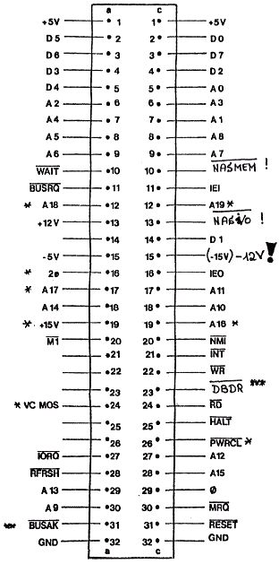

Nascom Journal |
4/81 5 |
5. Da ich zahlreiche für das Betriebssystem T2 geschriebene Programme besitze (RTTY, DISASS) habe ich mir Nassys in ein 2716 programmiert und eine Umschaltkarte Nassys oder T2 + 1k Ram gebaut.
6. Positive Erfahrungen wurden in dieser Konfiguration gemacht mit:
8k Ram/Rom Karte
nach
ELEKTOR
mit
2114
und Basic in
4x2716
32k dyn. Ram Karte aus ELZET-System
64-k quasi stat. Ram Karte von Mikropoint (dyn. Ram mit RFH-Contr.)
7. Literaturtip:
Jedem der sich mit Z 80 Computern auch Hardware orientiert beschäftigen will, dem sei das Buch „Mikrocomputer Hard- und Software Praxis“ von R.D. Klein empfohlen (Franzis ISBN 7723-6811-5).

BUS Belegung für ein angepasstes Kontron /Nascom System
| * | : | beim Nascom nicht verwendet. |
| ** | : | keine DAYSY-CHAIN vorgesehen. |
| *** | : | nur bei Verwendung des N.Bu.Boards nötig. |
| ! | : | für Nascom zusätzlich nötig. |
Stefan Bürger
____ Frankfurt __
__ ________ __
Tel. __ __ __
| Seite 3 von 31 |
|---|